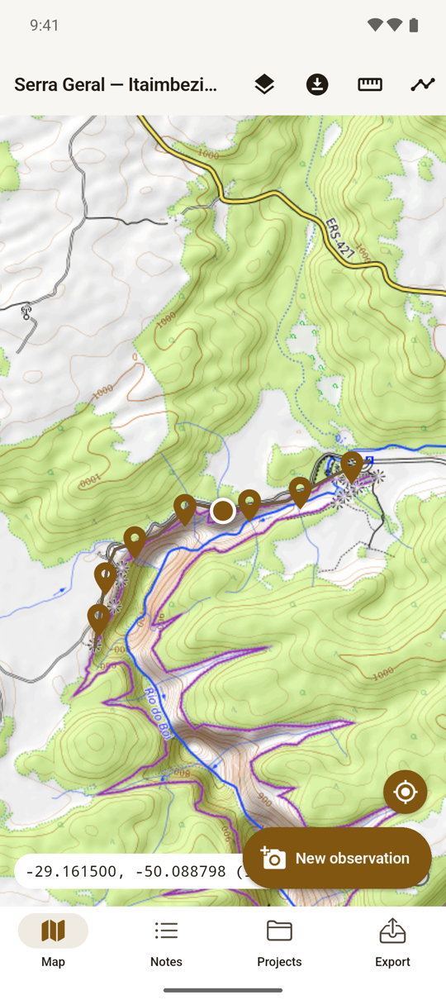
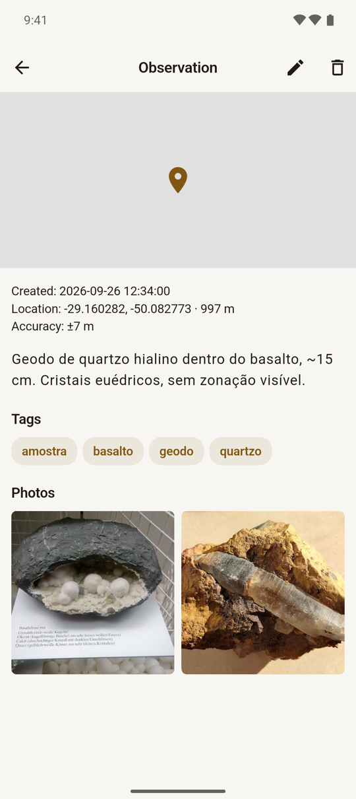
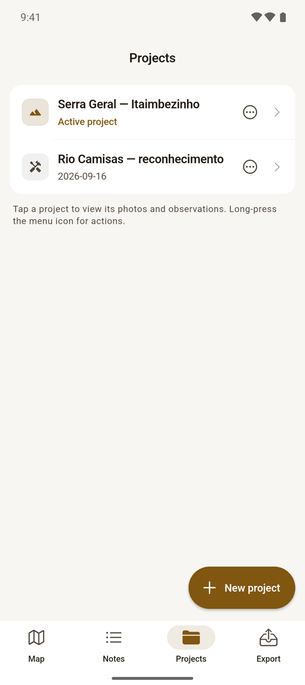
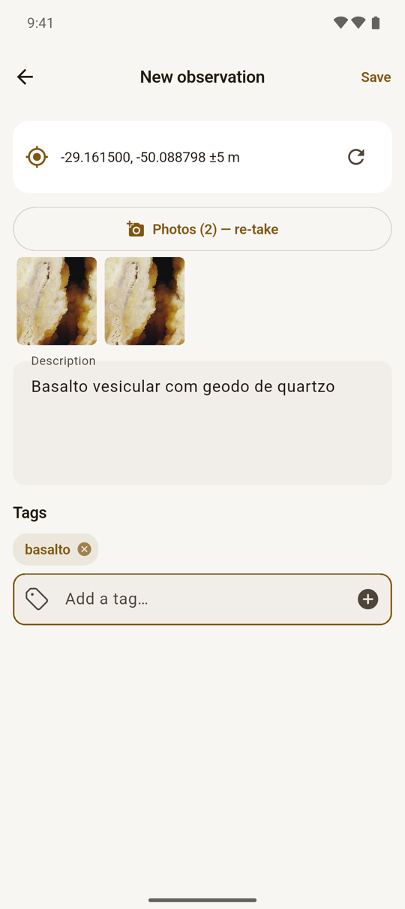

mapeamento de campo para Android
O caderno de campo que não precisa de sinal.
Marque o ponto, tire as fotos, escreva o que viu. O GPS vai junto. Tudo fica no aparelho.
a história
Eu precisava voltar do campo com tudo no lugar
Precisava mapear uma região: marcar pontos, tirar fotos amarradas ao GPS, gravar o trajeto, anotar o que via e chegar em casa com tudo organizado num projeto. Baixei uns dez aplicativos.
Nenhum fazia o que eu queria sem pedir conta, sincronizar com a nuvem ou cobrar assinatura. E no campo não tem sinal para nada disso.
Ponto, foto, descrição e GPS, sem depender de ninguém.
Foi mais rápido fazer o meu. Nasceu para geologia de campo, mas serve para qualquer atividade que peça o mesmo.
funcionamento básico
Três passos, todos sem internet
Baixe o mapa antes
Desenhe um retângulo, escolha o zoom e o mappy baixa os tiles. Topográfico com curvas de nível, OpenStreetMap ou satélite.
Registre o ponto
Abre a câmera, tira quantas fotos quiser da mesma parada, escreve a descrição e põe tags. O GPS é capturado sozinho.
Leve tudo para casa
Um ZIP com GeoJSON, CSV, trajetos e as fotos com EXIF de latitude, longitude, direção e altitude.




Da câmera ao ponto no mapa
Um toque em New observation abre a câmera do próprio app. Depois das fotos, a descrição e as tags (o mappy sugere as que você já usou no projeto), e o ponto aparece no mapa.
Para o que você viu de longe, pressione o mapa e coloque o ponto à mão.
Trajeto que sobrevive ao bolso
A gravação roda num serviço em primeiro plano, com um aviso na tela de bloqueio para você não esquecer o GPS ligado. Cada projeto grava o seu, e dá para gravar dois ao mesmo tempo.
A régua mede a distância entre pontos e, a partir de três, a área.
o que tem
Só o que o campo pede
Mapa offline
Três fontes de tile e pré-download por região, com zoom à sua escolha.
Projetos
Um por trabalho, com ícone próprio e um feed com todas as fotos.
Tags com sugestão
Digite e ele oferece as que você já usou naquele projeto.
Trajetos
Um por projeto, em segundo plano, e o estado sobrevive a fechar o app.
Régua
Distância entre pontos e área a partir de três.
Lixeira
Apagou sem querer? A observação vai para a lixeira e volta.
demo
Um dia de campo em um minuto
Do mapa à observação, do trajeto à exportação. Dados de exemplo no Serra Geral, RS.
As fotos da demo são de domínio público ou CC0 (créditos no repositório).
o que fica com você
Nada sai do aparelho
Sem conta, sem nuvem, sem sync, sem telemetria. A única coisa que usa a rede é baixar os tiles do mapa.
Seus dados, seu arquivo
Exporta um ZIP em Downloads/mappy com GeoJSON, CSV e as fotos.
Foto com GPS dentro
Latitude, longitude, direção da bússola e altitude gravados no EXIF de cada JPEG.
Código aberto
Flutter e SQLite local. Dá para ler, alterar e compilar você mesmo.
baixar
Instale no seu Android
O APK está na versão mais recente do GitHub.
É um app pessoal em desenvolvimento ativo, distribuído fora da Play Store e assinado com a chave de debug: o Android vai pedir para você permitir a instalação de fontes externas. Espere arestas.